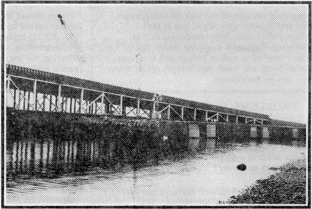

|
|
Search |
Published in:
Thanksgiving weekend November, 1990 -- everyone was interested in the extra high winds and the condition of the flooding rivers of Western Washington. But none were prepared for the alarming news being broadcast -- Old I90 floating bridge is going down! One pontoon section started sinking, wrenching free from the adjoining sections and then -- down it went! Other sections, now free of restraint, swung around, ripping and tearing the roadway that overlaid the pontoon sections until they, too, were free to sink or float away. The process was broadcast on television despite the rain and wind which prevented a clear view of what resembled a domino effect -- one section after another, buffeted by wind and waves, breaking loose and adding to the catastrophe. Tugs were brought to the scene to try to bring the loose sections under control and to try to prevent the adjoining floating bridge, newly finished, from the now unimpeded force of the storm.
It was quite a sight, a line of tugs, facing into the storm, fastened to the new bridge, trying their best to overcome the fury of the storm to save the new bridge while others were pushing loose sections of the old bridge against the shore of the lake. Anchors were devised in a hurry for the windward side of the new bridge, the side where the Old I90 bridge went down, and the new bridge survived. But there were many hours of anxiety when a few more miles per hour of wind could have brought the new bridge down too.

When the wind went down, and before the tugs took the unsunk sections somewhere out of sight, a stroller along the shore could see a long section with access doors along the side completely open to the weather -- just inches above the water. (Picture above). Some access doors were covered with steel doors which were dogged down, and some others had plywood covering the gaping holes.
One story about the cause of the catastrophe tells of demands by environmental people that the contractor doing work on the bridge not dump waste into the lake. According to the story, the contractor hadn't figured on the expense of hiring barges, or whatever, and so just pumped his waste into a pontoon. Another report was circulated that the first section to sink must have been leaking -- it was low in the water.
It goes without saying that there should have been persons in authority properly managing the situation, but obviously there was no competent person responsible -- or he would have been concerned and have done those things needed to insure the safety of the bridge. The follow-up to this catastrophe now is to find someone to take blame. But the problem is really the social system itself; it is an innappropriate mechanism for managing our technology.
Magazines, newspapers and television have spelled it out extensively: our infrastructure is coming apart. The TV show 60 Minutes had a very extensive portrayal of roads, bridges, water systems and other infrastructure in New York City that are antiquated and beyond repair. Some of New York's infrastructure was ruined completely because of the lack of maintenence. This was a very scary show, but it isn't unique; other cities have conditions as bad. Operating Engineers magazine stated that it would take three trillion dollars and ten years just to bring our roads and bridges up to where they can be maintained.
People should be able to see the obvious -- the job just cannot be done -- not in a Price System. With 377,000 bridges, 40% of which need repair or strengthening, and with the funding needed shrinking, we are taking unnecessary chances every time we cross a bridge.